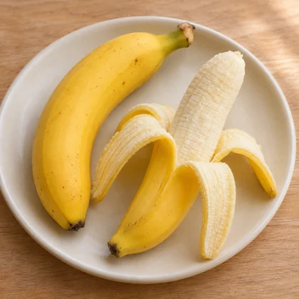
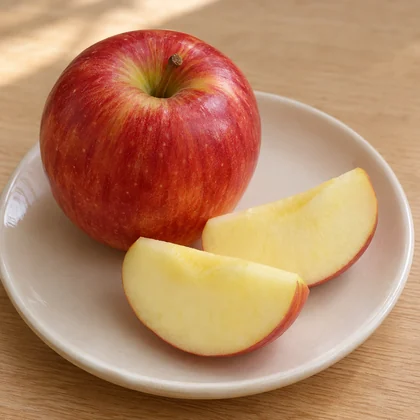
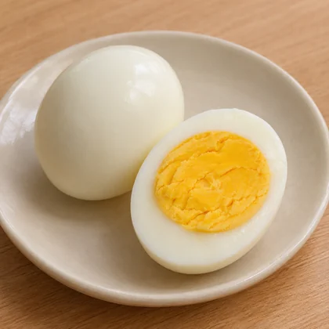
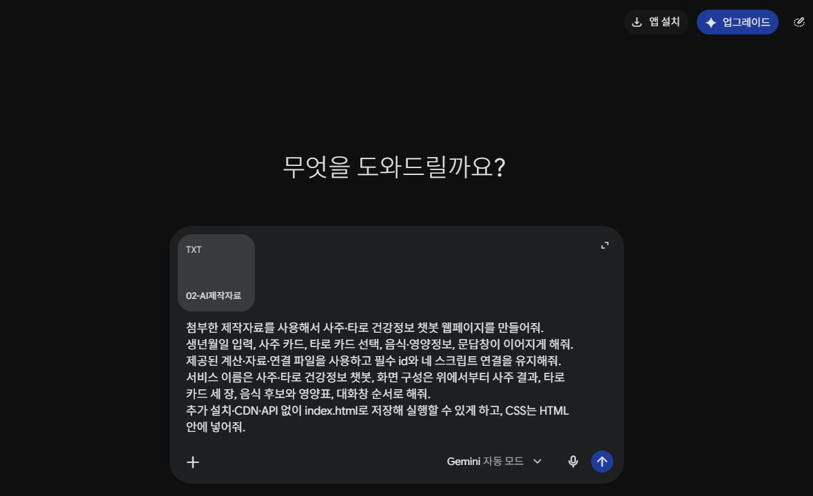
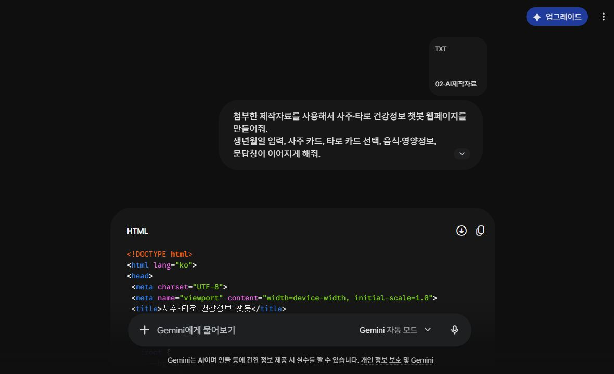
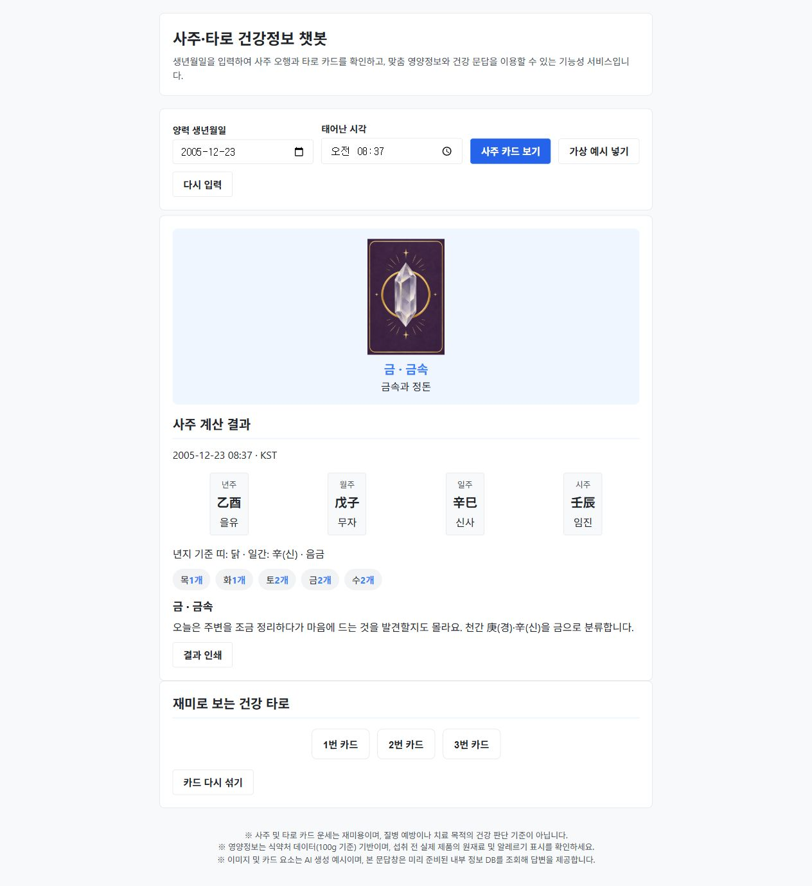
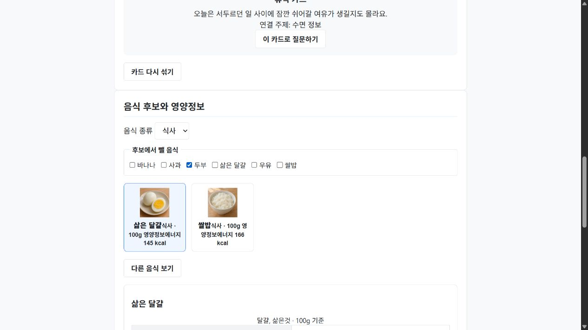
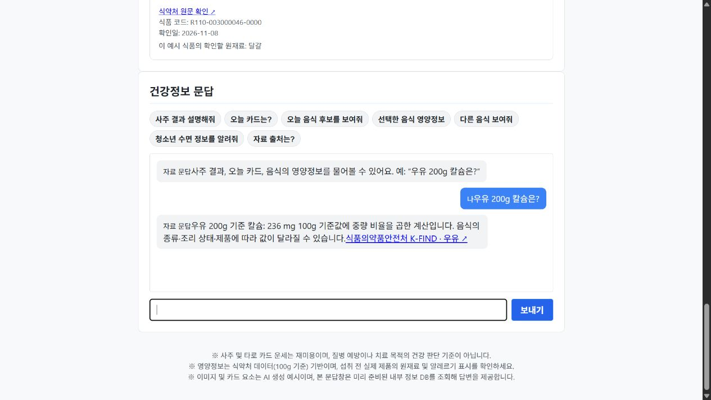
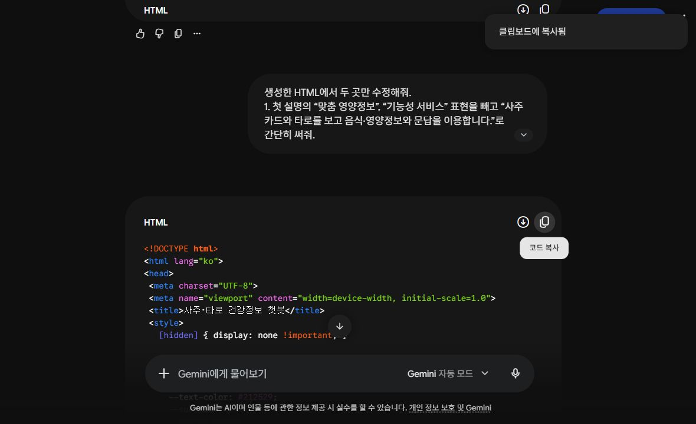
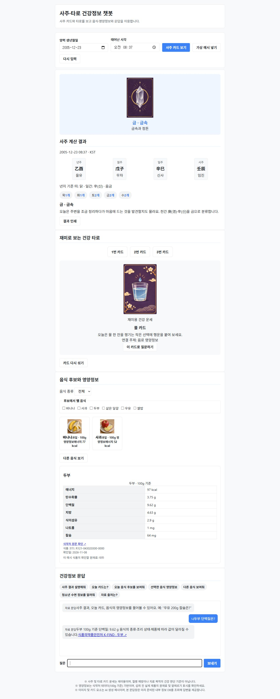

의료 AI와 건강정보
현장의 쓰임과 사람이 확인하는 일을 배웁니다.
- 부산 병원 사례 5분
- 간호 AI의 다섯 장면 30분
- AI의 역할 정리 5분
- 건강정보 확인 10분
의료 분야의 AI 활용과 건강정보 확인
수업 시작현장의 쓰임과 사람이 확인하는 일을 배웁니다.
사주·타로 카드와 음식·영양정보를 웹페이지로 연결합니다.
계산을 확인하고 문제 한 가지를 고칩니다.
기록을 정리하고, 위험 신호를 찾고, 물품을 옮깁니다. 실제 사례의 자료 → AI의 작업 → 간호팀의 확인을 차례로 살펴봅니다.
동아대병원의 공식 연혁에는 2026년 7월 6일 AI 기반 의무기록 시스템을 구축·운영한 내용이 올라와 있습니다. 지역 병원에서 시작해 간호 업무의 다섯 장면으로 이어갑니다.
동아대병원 공식 연혁 ↗아래 Microsoft 사례는 별도의 제품 사례입니다. 동아대병원이 해당 제품을 사용한다는 뜻은 아닙니다.
Microsoft Dragon Copilot · 간호용 제품
간호사와 환자의 대화를 바탕으로 정해진 항목의 기록과 서술형 간호기록 초안을 만드는 제품입니다. 담당자는 생성된 내용을 검토한 뒤 전자의무기록에 반영합니다.
업무 흐름 · 설명을 위한 수업용 도식
돌봄 과정에서 말한 내용
항목별 기록·간호기록 초안
대상·시각·누락·잘못된 표현
음성을 글로 바꾸는 일과, 그 글에서 필요한 내용을 골라 기록 형식으로 정리하는 일은 서로 다른 단계입니다. 처음부터 마지막 기록까지 어떤 단계에서 확인이 필요한지 따라가 보세요.
사람이 확인할 일 말하지 않은 내용이 추가됐는지, 중요한 말이 빠졌는지 원래 대화와 대조합니다.
한림대학교강남성심병원
병원은 입원 환자의 임상·간호 데이터를 바탕으로 낙상과 욕창 발생 위험을 예측하는 AI 솔루션을 자체 개발했다고 소개합니다. 환자 상태의 변화를 분석해 고위험 환자를 선별하는 데 활용합니다.
업무 흐름 · 설명을 위한 수업용 도식
입원 환자의 상태와 변화
낙상·욕창 위험 예측
실제 상태를 살피고 예방 계획에 연결
사람이 작성한 기록은 다음 근무자가 읽는 자료이면서, AI가 변화의 패턴을 분석하는 자료이기도 합니다. 기록이 정확해야 그다음 분석도 의미를 갖습니다.
사람이 확인할 일 위험 예측과 실제 사고 발생은 구분합니다. 위험 표시를 환자 관찰·사정과 함께 읽습니다.
Duke University Hospital · Sepsis Watch
듀크대병원의 Sepsis Watch는 패혈증 위험을 탐지·추적하는 시스템입니다. 2021년 공식 보고서에는 일반 병동의 환자대응팀 간호사들이 해당 시스템을 활용하는 사례가 소개되어 있습니다.
업무 흐름 · 설명을 위한 수업용 도식
시간에 따라 쌓이는 자료
의료진이 확인할 환자 정보 제공
관찰·의사소통·대응 과정에 활용
낙상·욕창 사례가 특정 안전사고의 위험을 다뤘다면, 여기서는 환자 상태가 나빠지는 신호를 다룹니다. AI의 알림이 실제 병동의 업무로 이어지는 과정을 설명할 수 있습니다.
사람이 확인할 일 알림을 받은 뒤 누가 환자를 확인하고 누구에게 전달할지까지 정해야 실제 업무가 됩니다.
Trinity Health St. Joseph Mercy Oakland · Moxi
병원은 물품·장비·의약품 등을 의료진에게 운반하는 자율주행 로봇 Moxi 두 대의 도입을 발표했습니다. 간호사와 지원 인력이 물품을 찾고 이동하는 업무를 돕는 사례입니다.
업무 흐름 · 설명을 위한 수업용 도식
어떤 물품을 어디로 보낼지 지정
물품이 필요한 곳까지 전달
환자에게 필요한 돌봄과 연결
AI는 화면 안에서 글만 만드는 기술이 아닙니다. 실제 공간에서 움직이는 로봇에는 주변을 파악하고 경로를 따라 움직이는 기능도 필요합니다. 무엇을 로봇에게 맡기고 무엇을 사람이 확인하는지 구분해 보세요.
사람이 확인할 일 물품을 운반하는 일과 환자에게 처치·투약하는 일은 서로 다른 업무입니다.
서울아산병원 · 프라이빗 AI 지식 검색
서울아산병원은 병원 내부 서버와 문서를 활용하는 AI 지식 검색 시스템의 가동을 발표했습니다. 질문에 관련된 임상 가이드라인·업무 규정을 찾고, 출처를 제시하며 답변하는 방식입니다.
업무 흐름 · 설명을 위한 수업용 도식
가이드라인·업무 규정
RAG · 검색 증강 생성
출처·문서의 시점·현재 상황 대조
문서를 먼저 찾고 그 내용을 참고해 답하는 흐름을 RAG라고 부릅니다. 병원마다 정한 절차와 자료가 있으므로, 어떤 문서를 근거로 답했는지 확인하는 과정이 중요합니다.
사람이 확인할 일 출처가 붙었다면 그 문서를 열어 질문과 관련 있는지, 현재 적용할 수 있는지 확인합니다.
간호기록 초안 · 문서를 찾고 답하기
낙상·욕창 위험 · 환자 상태의 변화
물품을 필요한 곳까지 운반
관찰한 내용이 자료가 되고, AI가 결과를 만들고, 의료진이 환자와 업무 상황에 맞게 확인합니다. 다음 화면에서는 같은 숫자라도 기준량이 달라지면 설명이 어떻게 달라지는지 봅니다.
WHO는 생성형 AI의 활용 분야에 의료·간호교육과 모의 환자 상황을 포함합니다. 활용 가능성을 소개하는 자료이며 특정 교육 제품의 도입 사례는 아닙니다.
WHO 활용·위험 안내 ↗공식 공개 자료 확인: 2026.11.10. 도입 연도·제품 기능·기관의 발표 범위를 사례마다 구분했습니다. 도식은 실제 제품 화면이나 환자 자료가 아닙니다.
건강정보의 숫자와 조건 확인하기 →아래 원문 자료와 가상 문장을 비교합니다. 음식 이름뿐 아니라 기준량과 출처도 확인하세요.
| 음식 | 에너지 | 단백질 | 칼슘 | 원문 |
|---|---|---|---|---|
| 두부 | 97 kcal | 9.62 g | 64 mg | 식약처 자료 ↗ |
| 우유 | 67 kcal | 3.09 g | 118 mg | 식약처 자료 ↗ |
이 표는 영양정보를 읽는 예시입니다. 표의 100g은 개인에게 권하는 섭취량이 아닙니다.
AI가 말한 숫자와 설명을 실제 자료와 비교합니다.
100g·한 개·한 컵의 차이, 식품 종류와 조리 상태를 확인합니다.
실제 검진표나 환자 정보를 일반 채팅에 올리지 않습니다. 개인 진단과 약 결정은 의료진과 상의합니다.
사주 계산 규칙, 오행 카드 5종, 타로 카드 4종, 음식·영양정보와 문답 코드를 함께 받습니다.
↓계산 규칙 · 카드·음식 그림 · 식약처 영양정보 · AI 제작자료 · 공통 예시
폴더 안의 02-AI제작자료.txt를 사용합니다. 카드 그림이나 긴 계산표까지 모두 첨부할 필요는 없습니다.
계산·카드·식품 자료는 준비되어 있고, 학생은 AI에게 입력창·카드 배치·결과 화면·대화창을 만들도록 요청합니다.



모든 영양정보에는 100g 기준, 식품 코드와 식약처 원문 링크가 포함됩니다. 음식 사진은 AI 생성 예시입니다.
양력 · KST · 2000–2035년 · 일주 23시 변경 · 출생지·진태양시 미보정. 네 기둥, 년지 기준 띠, 일간의 음양·오행과 여덟 겉글자의 오행 개수를 계산합니다.
사주 풀이와 타로 운세는 수업용 창작·놀이 문구입니다. 식품 후보는 종류·제외 설정에 따라 고르고, 영양정보는 공식 자료에서 가져옵니다.
절기표 출처: lunar-javascript 1.7.8. 전체 규칙과 MIT 라이선스는 키트에 있습니다.
제작자료를 첨부하고 사주·타로·음식정보·대화창이 이어지는 화면을 요청합니다.
키트의 02-AI제작자료.txt를 첨부합니다. 긴 절입 표와 계산 파일까지 모두 올릴 필요는 없습니다.
첨부가 어려우면 TXT를 메모장으로 열어 내용 전체를 채팅에 붙입니다.
index.html.txt가 아닌지 확인하세요. 코드 앞뒤의 설명이나 ``` 표시는 넣지 않습니다.
저장한 index.html을 더블클릭합니다. 제공된 네 JS 파일과 assets 폴더를 함께 둡니다. 가상 사주 계산, 타로 선택, 음식 제외와 문답을 실행해 보세요.
웹페이지를 실행할 때 AI에 다시 질문할 필요가 없습니다.
로그인된 강사 계정의 Gemini 자동 모드에서 제작 1회와 수정 1회를 실행했습니다. 아래 생성 HTML은 응답 코드를 그대로 보존했습니다. 학생 계정·학교 PC의 실행 조건은 수업 전에 확인합니다.







HTML만 따로 저장하면 계산 파일이 빠집니다. 시작 키트와 같은 폴더에 두세요. 실제 생성본과 공통 완성 예시는 구분해서 사용합니다.
공통 시작 파일도 완성 가능한 결과물입니다. index.html을 메모장으로 열어 제목·설명·CSS 색상부터 직접 바꿔 보세요. 첫 제작 1회와 수정 1회를 목표로 진행합니다.
친구의 실제 생년월일 대신 가상 입력 3개로 테스트합니다.
| 가상 입력 · KST | 년주 | 월주 | 일주 | 시주 |
|---|
네 기둥이 표와 같고, 해당 오행 카드와 띠·음양 설명이 나오나요?
타로를 선택하면 음식·문답이 열리나요? 제외한 음식이 후보에서 빠지나요?
“우유 200g 칼슘은?”에 236mg와 출처가 나오나요? 모르는 질문에 내용을 지어내지 않나요?
내 index.html과 이 요청문을 함께 보냅니다. 계산 코드를 유지하며 화면과 연결 부분을 고친 뒤 같은 테스트를 합니다.
저장한 파일을 다시 실행한 뒤 폴더 전체를 전달합니다.
index.html만 보내면 계산 코드가 빠집니다. 다운로드만 한 상태는 파일 전달 완료가 아닙니다.
적용한 계산 기준을 한 가지 설명합니다.
공통 예시와 내 결과물을 구분하세요. 기록에는 입력한 메모가 포함됩니다. 실명·실제 건강정보·생년월일을 적지 않습니다.